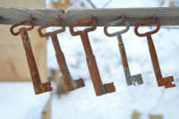

Pronunciation

Pronunciation is a rather technical area. What follows is
an attempt to map out the territory and give you some key concepts
and understanding – no more.
There is a link at the end to take you to some more comprehensive
guides.
The following assumes no knowledge of how to write the pronunciation
of words using a transcription system. However, learning such
a system is very valuable. Here is what is meant:

It actually isn't too hard to learn the symbols and it pays dividends.
|  |
5 key concepts |
- consonants
As you can see from the chart, there are quite a lot of consonants. They don't appear in alphabetic order above and there's a good reason for that. There are two sorts: voiced and unvoiced. Here's the test:- Try saying SSSSSSSSSS aloud now (go on, nobody's listening but you). Try to make a single continuous noise.
- Now say ZZZZZZZZZZ aloud, again as a continuous noise.
- Now put the palm of your hand on your throat and say SSSSSSSSSSZZZZZZZZZZSSSSSSSSSSZZZZZZZZZZZ
The importance is that many English consonants form voiced-unvoiced pairs and it's important for learners to get the difference. The word bat sounds different from pat simply because the b-sound is voiced and the p-sound is unvoiced. The other pairs are the red sounds in
tot-dot, card-guard, fan-van, jump, chump, think-this and shoo-zoo
All the other consonant sounds are as you see them in the chart. - vowels
There are, traditionally, 5 vowel letters in English: a, e, i, o and u. As you can see from the chart, however, there are 22 vowels in the language. To make matters worse, the individual sounds are not reliably represented by the spelling. The vowel sound in blood, for example, is the same as the one in cup, despite the spelling difference. This means that learners need to hear and say almost every word they meet.
There are two letters which look like consonants but sometimes act as vowels: w (as in how) and y (as in try). - stress
Again, there are two types:- word stress refers to the part of the word where the stress (or loudest section) falls. We say wonderful, not wonderful or wonderful, for example.
- sentence stress refers to which part or parts of a sentence are stressed. We would usually say, I went to London yesterday rather than I went to London yesterday or I went to London yesterday. Of course, we can stress a word whenever we like but we are usually making some sort of point.
- intonation
This refers to the 'music' of the language. Our voice rises and falls in pitch in some remarkably predictable ways. Try saying
You are going
and
You are going?
In the second, your voice pitch will rise to show the question. - weak forms
We do not usually pronounce the small words which hold the language together very completely. For example, we say fish 'n' chips or a cuppa tea. Neither of these are in any way wrong, by the way, they are simply a feature of the language which needs to be learned.
The most common weak form is the sound at the end of a word like later. It is a very short vowel and is the sound of the a in cuppa tea. If you learn no other transcription, learn to represent this sound as a /ə/. for is pronounced /fə/, for example in rapid speech as in, e.g.:
Please come for tea
but the word four is pronounced differently in, e.g.:
I have four shirts.
|
|
Task: Take a short test. |
 |
Learn more about pronunciation |
As was said, this is a rather technical area and, unless you are very keen, not one to trouble about too much at this stage. You must, however, be prepared to correct and guide your learners' pronunciation but it is possible to do that without focusing on any of the terminology above – just on the effects.
If you want more, try following the guide to some key terminology in this area. It covers a bit more than you have done here and will also give you some links to more difficult guides.
When you have time, you need to learn to transcribe the sounds of English as phonemes. There is a transcription course on this site to do just that.
If you would like to hear the sounds of English pronounced, the ideal place to go has been kindly provided by the British Council.